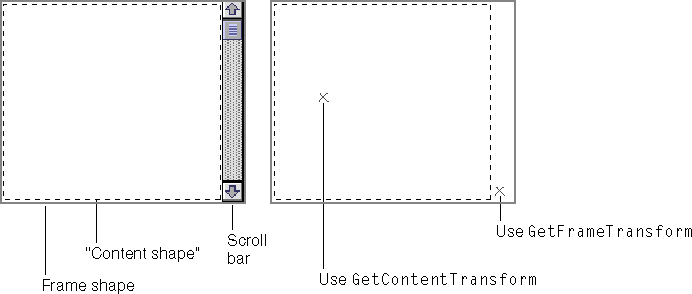
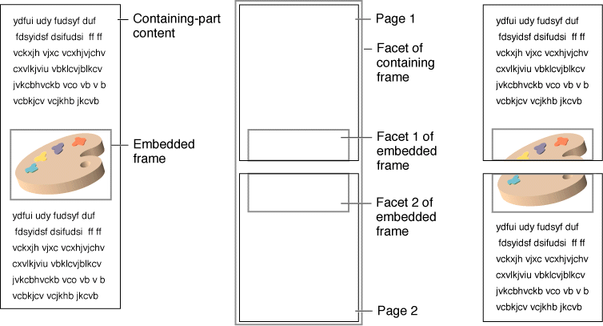
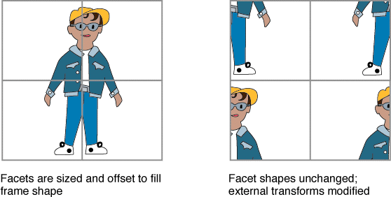
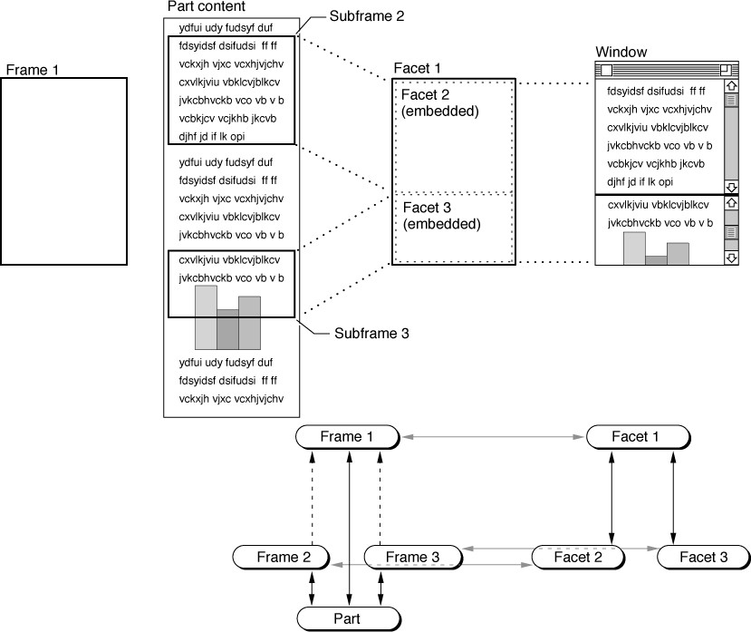
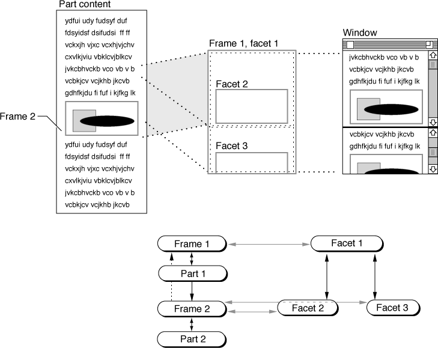

Drawing
Fundamental to OpenDoc is the responsibility of each part in a compound document to draw itself, within the limits of the frame provided by its containing part. Drawing typically occurs when your part editor is asked to draw a particular facet of a particular frame in which its part is displayed. Your part editor is responsible for examining that facet and frame and displaying the correct data, with the appropriate representation, properly transformed and clipped.Before drawing, your part editor should, if necessary, update the used shapes of its frames and the active shapes of its facets, so that the containing part can lay itself out correctly and so that only the proper events are dispatched to your part by the document shell.
This section begins by discussing how your part defines the general character-
istics of its display and outlining several aspects of the basic drawing process. The section then discusses
- drawing with scroll bars
- drawing directly to the window
- drawing asynchronously
- drawing offscreen
- using multiple frames and facets
Defining General Display Characteristics
OpenDoc parts can display themselves in different ways in different frames, or in different ways in the same frame at different times. The part is in control of its display within the borders of its frames, but there are conventions for other parts to request that the part display itself in a particular way.There are two kinds of display categories. The view type of a frame indicates whether the part within it is shown as one of several kinds of icons (standard icon, small icon, or thumbnail view type) or whether the part content itself is drawn within a frame (frame view type). View types are standard values, defined by OpenDoc; any part should be able to draw itself in any of the standard view types.
The presentation of a frame describes, for parts in frame view type, how the content is to be represented within the frame. Presentations are defined by parts. You define what types of presentations your part supports, and you assign their values. Examples of presentations are top view, side view, wireframe, full rendering, table, bar chart, pie chart, and tool palette.
View type and presentation are represented as tokenized ISO strings of type
ODTypeToken. If you create a presentation type, you define it first as an ISO string and then use the session object'sTokenizemethod to convert it to a token.View Type
You can get and set the view type of your display frames by calling the frame'sGetViewTypeandSetViewTypemethods, respectively.In general, a part is expected to adopt the view type specified by its containing part, according to the guidelines noted in the section "Preferred View Type for Embedded Parts". However, another part (such as your part's containing part) can change your frame's view type at any time, and you can change the view type of a frame of another part (such as one of your part's embedded parts) at any time, by calling the frame's
ChangeViewTypemethod. In response,ChangeViewTypesets the view type and then notifies the owning part by calling the part'sViewTypeChangedmethod. This is its interface:void ViewTypeChanged(in ODFrame frame);If your part receives this call, it should display itself in the specified frame according to the indicated view type. Parts must support all standard view types. If for some reason your part receives a request for a view type that it does not support, call your display frame'sSetViewTypemethod to change it back to a view type that you do support. (CallingSetViewTypedoes not result in a call to yourViewTypeChangedmethod.)Note that a change in view type can mean a change in the optimum size for your display frame; see Figure 13-12 for an example. Your
ViewTypeChangedmethod might therefore call your display frame'sRequestFrameShapemethod at this point to initiate frame negotiation.Presentation
You can get and set the presentation of your own frames by calling the frame'sGetPresentationandSetPresentationmethods, respectively.Note that another part (such as your part's containing part) can change your frame's presentation, and you can change the presentation of a frame of another part (such as one of your part's embedded parts), by calling the frame's
ChangePresentationmethod. In response,ChangePresentationsets the presentation and then notifies the owning part, by calling the part'sPresentationChangedmethod. This is its interface:void PresentationChanged(in ODFrame frame);If your part receives this call, and if it supports the indicated presentation, it should display itself in the specified frame accordingly. If it recognizes the indicated presentation but does not support it, or if it does not recognize it, your part should instead pick a close match or a standard default. It should then call the frame'sSetPresentationmethod to give it an appropriate value. (CallingSetPresentationdoes not result in a call to yourPresentationChangedmethod.)Part Info
The part info data of a frame is a convenient place for your part to store information about that particular view of itself. The information can be anything from a simple ID to a pointer to a complicated structure or a reference to a helper object. A frame's part info is stored with the frame, not the part. Thus, if the part has many frames and if only a few have been read into memory, only the part info of those frames will take up space in memory.To assign information to a frame's part info field, use its
SetPartInfomethod; to retrieve its part info, use itsGetPartInfomethod. Writing a frame's part info to its storage unit and reading it back in are described in the section "Reading and Writing Part Info".The facet object also contains a part info field, which can hold any kind of display-related information that you wish, such as transforms, color information, pen characteristics, or any other imaging-related data.
To assign information to a facet's part info field, use its
SetPartInfomethod; to retrieve its part info, use itsGetPartInfomethod. (A facet's part info is not persistently stored, so there are no methods for reading and writing it.)Basic Drawing
This section discusses how your part editor performs its drawing tasks in typical situations.Setting Up
To set itself up properly for display, your part should have previously examined the following information in the given facet and its frame.
- The view type of the frame tells your part whether it should display itself as an icon or whether it should show its contents. Your part should be ready to display itself in the specified frame according to the frame's view type.
- The presentation of the frame tells your part what kind of presentation (as defined by your own part) its content is to have, if it has frame view type. If your part does not support the frame's presentation, substitute a default presentation and call the frame's
SetPresentationmethod to give it the correct value.- Your part may be within a selection in its containing part. If so, it may need to be highlighted appropriately for the selection model of the containing part; see the section "Drawing Selections" for more information. You can call the
GetHighlightmethod of your facet at any time to see whether you should draw your content with full highlighting, dim (background) highlighting, or no highlighting.Alternatively, when your part's
HighlightChangedmethod is called, it can record the style of highlighting it has been assigned. It can then in turn call theChangeHighlightmethod of all facets embedded in the facet whose highlighting has changed, to make sure that they reflect the same highlighting style.- Check whether you need to draw borders around any link sources and destinations in your part's content, as described in the section "Link Borders".
- Both the frame and the facet may have information in their part info fields, placed there by the part itself, that can provide additional display-related information or objects. Use the
GetPartInfomethod to obtain it.- Your part should also be aware of the kind of canvas on which it is being drawn. You can call the
GetCanvasmethod of the facet to get a reference to the drawing canvas.If the canvas is dynamic (that is, if the result of calling the canvas's
IsDynamicmethod iskODTrue), the part is being drawn to an interactive device like a video display. Otherwise, it is being drawn to a static device like a printer (or perhaps a print-preview image onscreen). Your part may display its content differently in each case; for instance, it might display scroll bars only on dynamic canvases, and it might engage in frame negotiation if it is being drawn on a static canvas. For considerations applying to static canvases, see the section "Printing".Your part can make these adjustments from within its
FacetAddedandCanvasChangedmethods. When a facet is added, the static/dynamic nature of its canvas is fixed and cannot be changed unless the canvas itself is changed.The Draw Method of Your Part Editor
Your part must be able to display its content in response to a call to itsDrawmethod. This is the method's interface:void Draw(in ODFacet facet, in ODShape invalidShape);When it receives this call, your part editor draws the part content in the given facet. Only the portion within the update shape (defined by theinvalidShapeparameter) needs to be drawn. The update shape is based on previousInvalidatecalls that were made involving this facet or containing facets, or on updating needed because of part activation or window activation. The shape is expressed in the coordinate system of the facet's frame.Your part should take steps such as these to draw itself:
- Your part must make sure that any required platform-specific graphics structures are prepared for drawing and that the drawing context for the facet is set correctly. On the Mac OS using QuickDraw, for example, you must at least do the following:
- Set the current graphics port. Obtain the graphics-port pointer from the canvas by calling a method such as
GetPlatformCanvasorGetQDPort; pass the returned pointer to the QuickDrawSetPortroutine.- Set the origin of the graphics port to reflect your part's position on the canvas and the scrolled position of your content. Call your facet's
AcquireContentTransformmethod to get the proper conversion from your part's content coordinates to canvas coordinates, convert the transform to a QuickDraw offset, and pass that offset to the QuickDrawSetOrigincall.- Set the clip for drawing your part. Call your facet's
AcquireAggregateClipShapemethod to transform and intersect your facet's clip shape with all enclosing clip shapes, resulting in a composite clip shape in frame coordinates. Then convert the aggregate clip shape to a QuickDraw region, and pass that region to the QuickDrawSetClipcall.OpenDoc provides a utility library (FocusLib) that facilitates this step for QuickDraw drawing on the Mac OS platform.
- If your part has placed embedded parts on an offscreen canvas, have the embedded parts draw themselves first; see "Updating an Offscreen Canvas".
- Your part can then draw its contents, using platform-specific drawing commands.
Your part can alter the normal order of drawing, perhaps to combine overlapping embedded parts and content elements to achieve a sophisticated visual effect.
- You can force the drawing of a given embedded part at any point by calling the embedded facet's
Drawmethod.- Calling the embedded facet's
DrawChildrenmethod in addition forces the embedded part's own embedded parts to draw all invalidated portions of themselves immediately.- Calling the embedded facet's
DrawChildrenAlwaysmethod forces the embedded part's embedded parts to draw all of their content immediately, whether or not the content has been invalidated.
- IMPORTANT
- Unless you are the root part drawing in the root frame, never draw outside of the used shape of your display frame. Your part's containing part may be wrapping its content to the edges of your used shape.

Invalidating and Validating Your Content
To mark areas of your part's content that need redrawing, you modify the update shape of the canvas on which your part is imaged. To do so, you call theInvalidatemethod of your display frames or their facets, passing a shape (invalidShape), expressed in your own frame coordinates, that represents the area that needs to be redrawn. OpenDoc adds that shape to the canvas's update shape, and when redrawing occurs once again, that area is included in theinvalidShapepassed to yourDrawmethod.Likewise, to remove previously invalid areas from the update shape of the canvas, you call the
Validatemethod of your frame or facet, passing a shape (validShape) that represents the area that no longer needs to be redrawn. Validating is not a common task for a part editor to perform. OpenDoc automatically validates all areas that you draw into with yourDrawmethod. Also, when you draw asynchronously, you automatically validate the areas that you have redrawn when you call theDrawnInmethod of the facet.Drawing on Opening a Window
When a window opens, the facets for all the visible parts of the document are created when the window'sOpenmethod is called. The root part'sFacetAddedmethod is called; it builds facets for its embedded frames and invalidates them. OpenDoc in turn calls the embedded parts'FacetAddedmethods, so that they can build facets for their own embedded parts, and so on.Each part editor whose frame is visible in the window (that is, whose frame has an associated facet) thus receives a call to its
Drawmethod. The method draws the contents of its frame into the facet, either by using privately cached presentations or by making standard drawing calls, taking into account the frame's and facet's aggregate transforms and clip shapes.Drawing When a Window Is Scrolled
When the entire contents of a window are scrolled, the scrolled position of the contents is determined by the value of the internal transform of the root part's frame. If any of its embedded frames are made newly visible or newly invisible by scrolling, the root part should create or delete their facets by calling the root facet'sCreateEmbeddedFacetorRemoveFacetmethod, as described in the sections "Adding a Facet" and "Removing a Facet".To force redrawing of those parts of the window that need to be redrawn after scrolling, the root part marks the area that needs to be redrawn as invalid by calling the root facet's
Invalidatemethod. That area is then redrawn when an update event occurs.Redrawing a Frame When It Changes
If your part changes an embedded frame's shape, the embedded part and your part may both need to redraw portions of their content. Take these steps:When the next update event is generated, the
- Change the frame's shape as appropriate, by calling
ChangeFrameShape. OpenDoc then calls the embedded part'sFrameShapeChangedmethod, passing it the new frame shape.(Your part may receive a call to its
UsedShapeChangedmethod as a result of changing the embedded frame's shape.)- Change the clip shape--and external transform, if necessary--of the frame's facet to correspond to the new frame shape and, possibly, new used shape.
- If there is an undrawn area outside of the new facet shape, invalidate the portions of your own intrinsic content that correspond to the difference between the old and new frame shapes.
Drawmethods of the embedded part and your part, as appropriate, are called to draw the invalidated areas.Drawing When a Part Is Scrolled
When a user scrolls the contents of an embedded part, the containing part takes no role in the repositioning or redrawing. The embedded part sets its frame's internal transform to the appropriate value, as discussed in the section "Scrolling Your Part in a Frame", and calls the facet'sInvalidatemethod to force the redraw.If it is your part whose contents are to be scrolled, take these steps:
Drawing the contents of frames that include scroll bars is more complicated, for two reasons. First, the content must be clipped so that it won't draw over the scroll bars. Second, although the content can be scrolled, the scroll bars themselves should not move. See "Drawing With Scroll Bars" for more information.
- Call your frame's
ChangeInternalTransformmethod, to set the transform's offset values appropriately. How you obtain the offset values you pass toSetInternalTransformdepends on what kinds of events you interpret as scrolling commands and how you handle them. For example, handling events in scroll bars within your display frames is discussed in the section "Scrolling".- If any embedded frames become visible or invisible as a result of the scrolling, create or delete facets for them as described in the sections "Adding a Facet" and "Removing a Facet".
You can simply mark unneeded facets as purgeable at this time, actually deleting them only if OpenDoc calls your part's
Purgemethod. That way, you can simply reuse any undeleted facets if their frames become visible again.- Call your facet's
Invalidatemethod to force a redraw at the next update event. You should be able to shift the bits of your frame's image by the scrolled amount and invalidate only the portion of your facet that represents part content scrolled into view. On the Mac OS platform, the QuickDraw functionScrollRectprovides this capability.Drawing Selections
You determine how selecting works and how selections are drawn inside your parts. However, if your part editor supports embedding of other parts, you should support the selection behavior and appearance guidelines described in the section "Selection".When a part embedded within your part is selected, the appearance you give it should be appropriate for your own selection model, but it should also reflect whether the part is selected by itself or is part of a larger selection that includes your own part's intrinsic content.
Your part should support multiple selection, allowing the user to select more than one frame at a time. Your part should also support Select All on its own contents. Furthermore, it should allow for selection of hot parts--parts (such as controls) that normally perform an action (such as running a script) in response to a single click--without executing the action. See "Making Multiple Selections" and "Selecting Hot Parts" for more specific guidelines.
- To select an embedded part alone when it is viewed in a frame, the user can perform several actions, such as activating the part and then clicking on its frame border, or using a lasso tool or other selection method supported by the containing part. (Your part should support all selection methods that are appropriate for your content model. Note that when a frame is selected, its part is not active; the menus displayed are those of the containing part.)
If the part alone is selected, your part (the containing part) should draw the frame border with a standard appearance--typically a gray line, corresponding to the frame shape, with resize handles (usually eight of them) if you permit the user to resize the frame. If you allow nonrectangular frames, such as irregular polygons or circles, you are responsible for putting an appropriate number of resize handles on the frame border.
- To select an embedded part alone when it is viewed as an icon, the user places the mouse pointer over the part's icon (that is, anywhere within the active shape of the facet displaying the icon) and clicks the mouse button. Because the view type of the facet specifies an icon rather than frame display, OpenDoc sends the mouse-up event to your part (as an event type of
kODEvtMouseUpEmbedded).You should, in this case, not draw the frame border of the embedded part at all. Instead, you should notify the part that it is highlighted by calling the
ChangeHighlightmethod of the embedded part's facet, specifying a highlighting value ofkODFullHighlight. It is then up to the embedded part to draw its highlighted appearance, either by using a highlighting color or displaying the selected version of its icon.- When an embedded part is enclosed within a range of your selected intrinsic content, its appearance should be analogous to that of the intrinsic content itself. You should draw the frame border with a selected appearance, if appropriate, and you should call the
ChangeHighlightmethod of the embedded part's facet, so that the part will know how it should high-light itself.
- If your part highlights selections with a highlighting color or inverse video (as text processors typically do), you should not draw frame borders around embedded parts within your selection, and you should set their facets' highlighting value to
kODFullHighlight.- If your part highlights selections by drawing frame borders around individual objects (as object-based drawing programs typically do), you should draw frame borders with a selected appearance around any embedded parts, and you should set their facets' highlighting value to
kODNoHighlight.- If your part highlights selections by drawing a dynamic marquee or lasso border around the exact area of the selection (as bitmap-based drawing programs typically do), you should not draw frame borders around embedded parts, and you should set their facets' highlighting value to
kODNoHighlight.For definitions and examples of these kinds of highlighting and frame-
border appearance, see "Making a Range Selection".Drawing With Scroll Bars
This section discusses two methods for providing scroll bars for your parts. These approaches work not only for scroll bars but also for any nonscrolling adornments associated with a frame.Placing Scroll Bars Within Your Frame
If you create scroll bars for your content inside the margins of your frame, remember that your frame shape includes the areas of the scroll bars. To draw properly, you need to account for the fact that, although your content can scroll, the scroll bars themselves should remain stationary.The method discussed in this section applies equally well to a root part that needs to put scroll bars in its window.
Clipping and Scrolling Your Content
One approach is to create an extra, private "content shape," as shown in Figure 4-15. The content shape is the same as the frame shape, except that it does not include the areas of the scroll bars.Figure 4-15 Using a "content shape" within a frame shape for drawing

You can define the content shape in terms of frame coordinates, and you can store it anywhere, although placing it in your frame's part info data is reasonable.When drawing your part's contents--the portion within the area of the content shape--you take the current scrolled position of your content into account. You include the frame's internal transform by using the transform returned by your facet's
AcquireContentTransformmethod to set the origin, and you intersect the content shape with the facet's clip shape when drawing. When drawing the scroll bars, however, you ignore the current scrolled position of your content. You use the transform returned by your facet'sAcquireFrameTransformmethod to set the origin, and you intersect the frame shape with the facet's clip shape.Clipping Embedded Frames
One complication of this method is that OpenDoc knows nothing of your content shape and therefore cannot clip the facets of embedded frames accordingly. OpenDoc clips all embedded facets to the area of your frame's facet, but that area includes the scroll bars as well. Thus, embedded parts can draw over the area of your scroll bars.To avoid this problem, you must set each embedded facet's clip shape to be the intersection of its otherwise-expected clip shape with your content shape.
Placing Scroll Bars in a Separate Frame
To avoid having to define a separate, private "content shape," you can place scroll bars or adornments in completely separate frames from your content. This method, however, requires the overhead of defining more objects, uses more memory, and may possibly affect performance negatively.You can request one display frame for your part that encloses both the scroll bars and the content. This frame has an internal transform of identity: it does not scroll. You draw the scroll bars directly in this frame.
You then request a second display frame for your part, a frame that can scroll and in which you draw your content. Make the second frame a subframe of the first; that is, make the nonscrolling frame the containing frame of the scrolling frame. Because both frames are display frames of the same part (yours), you must set the
isSubframeparameter to true when you first create the new frame. This setting notifies OpenDoc that the frame is a subframe so that OpenDoc can draw the active frame border in the correct location--around the facet of the parent frame.Your part's containing part must, as usual, make separate facets for both frames. Then, when a mouse event occurs in the nonscrolling frame, your part can interpret it and set the internal transform of the scrolling frame accordingly.
With this method, you do not need to take any special care to manage clip shapes of any embedded facets.
A more common use of subframes may be in creating scrollable split windows. See "Drawing With Multiple Frames or Facets".
Drawing Directly to the Window
In some circumstances, you may want your part editor to draw interactively, providing feedback for user actions. For example, you may support rubber-
banding or sweeping out a selection while the mouse button is held down. If so, your part can draw directly on the root facet's canvas (the window canvas). The window canvas is equivalent to the Window Manager port in QuickDraw terms.OpenDoc provides several
ODFacetmethods, analogous to those used for drawing to your own canvas, that you can use to draw directly to the window:Use the values returned by these methods to set up your drawing structure when you must draw directly to the window canvas. When there is no canvas in the facet hierarchy other than the window canvas, the results returned by each of these pairs of methods are the same.
- The
AcquireWindowContentTransformmethod, analogous toAcquireContentTransform, converts from your part's content coordinate space to window-canvas coordinate space.- The
AcquireWindowFrameTransformmethod, analogous toAcquireFrameTransform, converts from your part's frame
coordinate space to window-canvas coordinate space.- The
AcquireWindowAggregateClipShapemethod, analogous toAcquireAggregateClipShape, transforms and intersects your part's
facet clip shape with all enclosing clip shapes, resulting in a composite
clip shape in window-canvas coordinate space.Asynchronous Drawing
Your part editor may need to display its part asynchronously, rather than in response to a call to yourDrawmethod. For example, a part that displays a clock may need to redraw the clock face exactly once every second, regardless of whether or not an update event has resulted in a call to redraw. Asynchronous drawing is very similar to synchronous drawing, except that you should make these minor modifications:
- Determine which of your part's frames should be drawn. Your part can have multiple display frames, and more than one may need updating. Because your part stores its display frames privately, only you can determine which frames need to be drawn in.
- For each frame being displayed, you must draw all facets. The frame's
CreateFacetIteratormethod returns an iterator with which you can access all the facets of the frame. (Alternatively, you can keep your own list of facets.) Draw the part's contents in each of these facets, using the steps listed for synchronous (regular) drawing.- After drawing in a facet, call its
DrawnInmethod to tell it that you've drawn in it asynchronously. If the facet is on an offscreen canvas, callingDrawnInallows the drawing to be copied into the window, because the owning part'sCanvasUpdatedmethod is called.Offscreen Drawing
There are several situations in which you may want your part to create an offscreen canvas. For example, you may want to increase performance with double-buffering, drawing complex images offscreen before transferring them rapidly to the screen. Alternatively, you may want to perform sophisticated image manipulation, such as drawing with transparency, tinting, or using complex transfer modes.Parts are likely to create offscreen canvases for their own facets for double-
buffering, in order to draw with more efficiency and quality. Parts are likely to create offscreen canvases for their embedded parts' facets for graphic manipulation, in order to modify the imaging output of the embedded part and perhaps combine it with their own output.Canvases are described in general in the section "Using Canvases"; this section discusses how to use them for offscreen drawing.
Drawing to an Offscreen Canvas
Drawing on an offscreen canvas is essentially the same as drawing on an onscreen canvas.If you want to bypass the offscreen canvas and draw directly on the window canvas, make sure you obtain the window canvas when setting up the environment. Then use the appropriate facet calls (such as
- You set up the environment as usual: you obtain the canvas and its pointer to the system-specific drawing structure as usual, and you use your facet's transform and clip information as usual.
- If you draw asynchronously on your facet's offscreen canvas, you must, as for any asynchronous drawing, call the facet's
DrawnInmethod to ensure proper updating of the offscreen canvas to the window canvas. If your part's facet is moved to an offscreen canvas while it is running, OpenDoc calls your part'sCanvasChangedmethod, so that your part will know to callDrawnInif it is drawing asynchronously.- You perform invalidation as usual: you call the
InvalidateorValidatemethod of your display frames and their facets, to accumulate the invalid area in the update shape of the offscreen canvas.AcquireWindowContentTransforminstead ofAcquireContentTransform) when setting the origin and clip.Updating an Offscreen Canvas
The part that owns an offscreen canvas is responsible for transferring its contents to the parent canvas. Only the part that created the canvas can be assumed to know how and when to transfer its contents. The canvas may have a different format from its parent (one may be a bitmap and the other a display list, for example); the owner may want to transform the contents of the canvas (such as by rotation or tinting) as it transfers; or the owner may want to accumulate multiple drawing actions before transferring.When a containing part has placed one of its embedded part's facets on an offscreen canvas, it should force the embedded part to draw before the containing part itself draws any of its own contents. This step ensures that the contents of the offscreen canvas are up to date and can be combined safely with the containing part's contents when drawn to the onscreen canvas. You can force your embedded part to draw itself by calling the embedded facet's
Drawmethod; you can force your embedded part's own embedded parts to draw themselves by also calling your embedded facet'sDrawChildrenmethod.If an embedded part displays asynchronously and uses
InvalidateorValidatecalls to modify the update shape of its offscreen canvas, the offscreen canvas calls its owning part'sCanvasUpdatedmethod to notify it of the change. The owning part can then transfer the updated content immediately to the parent canvas, or it can defer the transfer until a later time, for efficiency or for other reasons.Drawing With Multiple Frames or Facets
OpenDoc has built-in support for multiple display frames for every part, and multiple facets for every frame. This arrangement gives you great flexibility in designing the presentation of your part and of parts embedded in it. This section summarizes a few common reasons for implementing multiple frames or multiple facets.Using Multiple Frames
Several uses for multiple frames have already been noted in this book, most of which involve the need for simultaneous display of different aspects or portions of a part's content.In general, the part that is displayed in a set of frames initiates the use of multiple frames. The containing part does, however, have ultimate control over the number and sizes of frames for its embedded parts.
- A part whose frame is opened into a part window requires a second frame as the root frame of that part window.
- A part that flows text from one frame to another naturally needs more than one frame.
- Parts that allow for multiple different presentations of their content are likely to display each kind of presentation (top view versus side view, wireframe versus rendered, and so on) in a separate frame.
- Parts that display scroll bars, adornments, or palettes in addition to their own content might use separate frames for such items.
Using Multiple Facets
The use of multiple facets allows a containing part to duplicate, distort, and reposition the content displayed in its embedded frames. Normally, even with multiple facets, all of the facets of a frame display their content within the area of the frame shape, because the frame represents the basic space agreement between the embedded part and the containing part. However, the containing part always controls the facets to be applied to its embedded frames, and so the containing part can display the facets in any locations it wishes.Drawing an Embedded Frame Across Two Display Pages
Perhaps the most common reason to use multiple facets for a frame is to show an embedded frame spanning a visual boundary between separate drawing areas in a containing frame.In Figure 4-16, for example, a word-processing part uses a single display frame and facet for a pair of its pages but displays the pages with a visual gap between them. An embedded part's display frame spans the boundary between page 1 and page 2. The word-processing part then defines two facets for its embedded frame: one facet in the display for page 1, and the other in the display for page 2.
Figure 4-16 Using two facets to draw a frame that spans a page break

Multiple Views of an Embedded Frame
One simple use of multiple facets is for a containing part to provide a modified view (such as a magnification) in addition to the standard view of an embedded frame. You can also use multiple facets to tile the area of an embedded frame with multiple miniature images of the frame's contents.A similar but more complex example is shown in Figure 4-17. In this case, multiple facets are used to break up the image in an embedded frame, to allow the tiled parts to be moved, as in a sliding puzzle.
Figure 4-17 Using multiple facets to rearrange portions of an embedded image

The clip shapes for the facets in Figure 4-17 are smaller than the frame shape and have offset origins so that they cover different portions of the image in the frame. Initially, as shown on the left, their external transforms have offsets that reflect the offsets in the shape origins, and the facets just fill the area of the frame. Subsequently, as shown on the right, the containing part can cause any pair of facets to change places in the frame simply by swapping their external transforms.Providing Split-Frame Views
One of the most useful implementations of multiple facets may be for the construction of split-frame views, in which the user can independently view and scroll two or more portions of a single document. This use of multiple facets is somewhat more complex than the others presented here, because it also involves use of subframes, embedded frames that display the same part as their containing frame. Figure 4-18 shows one example of how to use two subframes to implement a split-frame view.Figure 4-18 Using subframes to implement a split-frame view

In Figure 4-18, the part to be displayed has one frame (frame 1) and facet (facet 1) that represent its current overall frame size and display. The part creates frames 2 and 3 as embedded frames, specifying that the containing frame for both is frame 1, and also specifying that they are to be subframes of their containing frame. The diagram in the lower right of Figure 4-18 shows the object relationships involved, using the object-diagram conventions described in "Runtime Object Relationships".The part now needs to negotiate for frames 2 and 3 only with itself. It creates facets for them, embedded within facet 1. The part can now position the contents of frame 2 and frame 3 independently, by changing their internal transforms. It uses the external transforms to place facets 2 and 3 within facet 1 as shown. The two facets together fill the area of frame 1 and show different parts of the document.
You can also achieve a split-frame view with a somewhat simpler method that does not require the use of subframes. In this case, your part must perform extra work to split its content display. The method relies on multiple facets only for duplicate display of embedded parts. As Figure 4-19 shows, your part has only a single display frame and facet.
- Note
- It is possible to achieve the same effect with only a single subframe. The facet of the parent frame can display one portion of the split view and the facet of the subframe can display the other.
Figure 4-19 Implementing a split-frame view using a single display frame

You create two facets (subfacets of your display frame's facet) for each embedded part that is visible in both halves of the split view. By your own means, you separate the display of your part's intrinsic content, and at the same time you apply the appropriate external transforms to each embedded facet so that embedded parts appear in their proper locations in each portion of your split view. (The diagram in the lower right of Figure 4-19 shows the object relationships.)